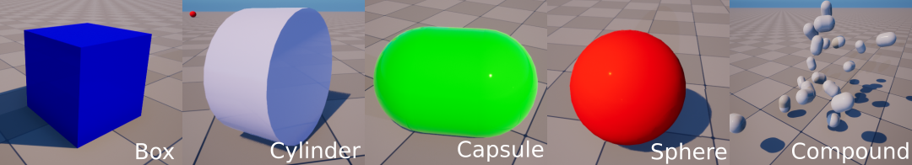
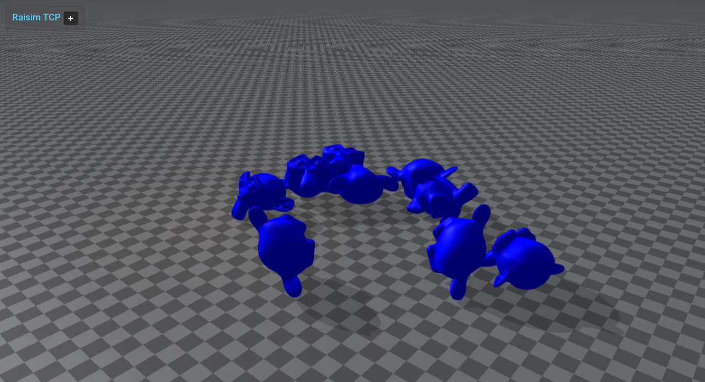

Single-Body Objects
raisim::SingleBodyObject is an object with only one rigid body.
raisim::Compound is also a SingleBodyObject because its components move together as one rigid body.
All SingleBodyObjects have 6 degrees of freedom: 3 for position and 3 for orientation.
Primitives
The following five primitive shapes are supported in RaiSim.

Compound
Legacy RaisimUnity examples are no longer supported; use rayrai for current visualization examples.
raisim::Compound has multiple primitive shapes that are rigidly attached to each other to form a single rigid body.
The shapes do not have to overlap to stay attached.
A compound object can be added to the world using the method raisim::World::addCompound.
This method takes a vector of children, which have their own shape, material, position, and orientation.
The shape can be specified by a geometric type (i.e., raisim::ObjectType) and its size parameters (objectParam).
The objectParam follows a standard way to represent the size of a primitive in RaiSim:
Sphere: radius, 0, 0, 0
Box: x, y, z, 0
Capsule and cylinder: radius, height, 0, 0
The objectParam is an instance of raisim::Vec<4>.
All shapes require fewer than four parameters and the unused elements (i.e., the zeroes above) are ignored.
The trans member defines the position and orientation of the child in the body frame.
It is a struct with public rot and pos members.
The mass, COM, and inertia arguments specify the dynamical properties of the combined body.
Mesh
{kind=link}

raisim::Mesh represents a single-body object defined by a triangle mesh.
It is commonly used for props, scanned objects, and imported object models.
Meshes are added via raisim::World::addMesh.
Public mesh collision modes
The public addMesh API exposes three collision representations:
MeshCollisionMode::CONVEXIFY: CoACD convex decomposition. This creates multiple convex collision parts from one mesh. This is the default foraddMesh.MeshCollisionMode::CONVEX_HULL: one convex hull built from the mesh.MeshCollisionMode::ORIGINAL_MESH: the original non-convex triangle mesh.
Original non-convex triangle mesh collision is useful for imported visual meshes that are invalid CoACD input, but it is usually slower and less robust than convex collision geometry.
Default convex approximation
The shortest overload uses CoACD convex decomposition by default and estimates inertia/COM from the scaled axis-aligned bounding box. If CoACD cannot process the mesh, RaiSim warns and falls back to a single convex hull built from the mesh:
auto* mesh = world.addMesh(meshFile, mass, scale);
The explicit-inertia overload is also convex-approximated by default:
auto* mesh = world.addMesh(meshFile, mass, inertia, com, scale);
Explicit collision modes
Use MeshCollisionMode::CONVEX_HULL for the cheapest convex mesh collider:
auto* mesh = world.addMesh(meshFile, mass, scale, "",
raisim::MeshCollisionMode::CONVEX_HULL);
Use MeshCollisionMode::ORIGINAL_MESH when you intentionally want the non-convex triangle mesh:
auto* mesh = world.addMesh(meshFile, mass, scale, "",
raisim::MeshCollisionMode::ORIGINAL_MESH);
You can still pass MeshCollisionMode::CONVEXIFY explicitly when you want to make the default
choice visible at the call site:
auto* mesh = world.addMesh(meshFile, mass, scale, "",
raisim::MeshCollisionMode::CONVEXIFY);
Custom CoACD options
Tune CoacdOptions when you need more or fewer convex parts. Lower thresholds and larger
maxConvexHull values can preserve more shape detail, but they increase build time and can
make contact processing slower.
raisim::CoacdOptions options;
options.threshold = 0.08;
options.maxConvexHull = 8;
options.sampleResolution = 1200;
options.mctsIteration = 80;
auto* mesh = world.addMesh(meshFile, mass, scale, "",
raisim::MeshCollisionMode::CONVEXIFY,
raisim::CollisionGroup(1),
raisim::CollisionGroup(-1),
options);
You can also pass options directly:
auto* mesh = world.addMesh(meshFile, mass, scale, "", options);
CoACD input requirements
The bundled CoACD integration is intentionally small and does not include heavy preprocessing dependencies. It works best with closed, reasonably manifold meshes.
If MeshCollisionMode::CONVEXIFY fails (for example, the mesh is not 2-manifold),
RaiSim prints a warning and falls back to a single convex hull (MeshCollisionMode::CONVEX_HULL)
built from the same vertices. This keeps imported visual meshes such as robot body panels usable
when they are not valid CoACD input, and avoids the deep-penetration and performance pathologies
of non-convex triangle-mesh collision. If you intentionally want the original non-convex triangle
mesh, request MeshCollisionMode::ORIGINAL_MESH explicitly.
CoACD cache files
Successful MeshCollisionMode::CONVEXIFY calls write an OBJ cache beside the
source mesh. This keeps repeated runs cheap: the first call pays the CoACD decomposition cost, while later calls with
the same parameters load the saved convex parts directly.
The file name starts with raisim_coacd_ and includes the source mesh stem, a content hash,
scale, and CoACD option values, for example:
raisim_coacd_model_hash_0123456789abcdef_scale_1_threshold_0_08_maxhull_8_..._realmetric_0.obj
The cache stores each convex part as a separate OBJ group named raisim_coacd_part_N. On later
addMesh calls with the same source mesh contents and CoACD parameters, RaiSim loads these groups
instead of running CoACD again. The loaded convex parts are expected to match the generated parts
exactly.
Changing the source mesh contents changes the hash and therefore produces a different cache file.
Different CoACD settings also produce different cache file names, so changing options such as
threshold, maxConvexHull, sampleResolution, or mctsIteration does not reuse an
incompatible cache.
For a 16k-triangle YCB apple mesh using the default CoACD options, a local timing run took about 4.3 seconds on the first uncached call and about 49 ms on the second cached call. Exact timings are machine- and mesh-dependent, but large meshes should see the largest benefit.
These files are generated artifacts and are ignored by the repository .gitignore rules via
raisim_coacd_*. Delete the corresponding raisim_coacd_* file manually if you want to force a
fresh decomposition without editing the source mesh.
Inspection helpers
raisim::Mesh exposes the generated convex parts for debugging and visualization:
const auto& parts = mesh->getCoacdConvexParts();
std::cout << mesh->getCollisionBodyCount() << std::endl;
When CoACD falls back to a single convex hull, getCoacdConvexParts() is empty and
getCollisionBodyCount() returns 1.
The rayrai example rayrai_coacd_mesh_approximation displays original meshes next to colored
convex decomposition parts.
Model preprocessing and export
raisim::Mesh::preprocessMesh loads any Assimp-supported mesh format, applies a scale, triangulates
it, and writes a normalized OBJ cache. The output name includes a content hash and scale so repeated
runs can reuse the cached OBJ safely.
raisim::Mesh::PreprocessOptions options;
options.scale = 1.0;
options.cacheDirectory = "/tmp/raisim_mesh_cache";
auto result = raisim::Mesh::preprocessMesh("asset.glb", options);
auto* mesh = world.addMesh(result.outputPath,
1.0,
1.0,
"default",
raisim::MeshCollisionMode::CONVEX_HULL);
Use World::exportMeshAssetsToObj(directory, prefix) to export mesh objects already in a world as
normalized OBJ files. The function returns the generated paths in world-object order.
std::vector<std::string> exported = world.exportMeshAssetsToObj("/tmp/raisim_export", "scene");
Visual assets and collision assets should remain separate unless you explicitly want to reuse the same mesh for both. A high-detail textured glTF visual mesh is often unsuitable as a collision mesh; use a simplified convex hull, CoACD decomposition, or authored collision asset for simulation.
OpenUSD mesh loading
USD/USDA/USDC/USDZ files are loaded through RaiSim’s bundled OpenUSD runtime, not through
Assimp’s USD importer. OpenUSD support is included in supported RaiSim builds, so
World::addMesh accepts USD files directly:
auto* mesh = world.addMesh("asset.usd",
1.0,
1.0,
"default",
raisim::MeshCollisionMode::ORIGINAL_MESH);
The importer reads UsdGeomMesh geometry, applies parent transforms, triangulates faces,
and merges mesh prims into one RaiSim mesh object. It does not instantiate USD physics,
articulations, variants, skeletons, lights, or full material graphs. Keep collision meshes
reasonably sized, and use simplified collision assets, convex hulls, or CoACD when a USD
visual mesh is too detailed for contact.
See OpenUSD Loading for runtime layout, examples, and troubleshooting.
SingleBodyObject API (Parent class)
Warning
doxygenclass: breathe_default_project value ‘raisim’ does not seem to be a valid key for the breathe_projects dictionary
Compound API
Warning
doxygenclass: breathe_default_project value ‘raisim’ does not seem to be a valid key for the breathe_projects dictionary
Sphere API
Warning
doxygenclass: breathe_default_project value ‘raisim’ does not seem to be a valid key for the breathe_projects dictionary
Box API
Warning
doxygenclass: breathe_default_project value ‘raisim’ does not seem to be a valid key for the breathe_projects dictionary
Capsule API
Warning
doxygenclass: breathe_default_project value ‘raisim’ does not seem to be a valid key for the breathe_projects dictionary
Cylinder API
Warning
doxygenclass: breathe_default_project value ‘raisim’ does not seem to be a valid key for the breathe_projects dictionary
Ground API
Warning
doxygenclass: breathe_default_project value ‘raisim’ does not seem to be a valid key for the breathe_projects dictionary
Mesh API
Warning
doxygenclass: breathe_default_project value ‘raisim’ does not seem to be a valid key for the breathe_projects dictionary